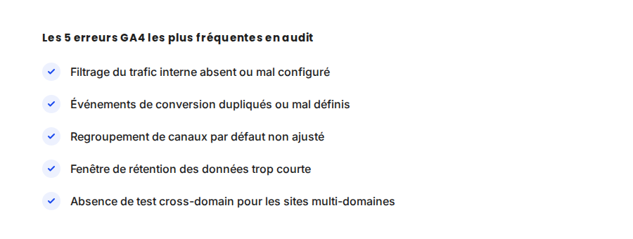

GA4 : les 5 erreurs de configuration qui faussent vos données
Sur la quasi-totalité des comptes GA4 que j'audite pour la première fois, je trouve au moins une erreur de configuration qui fausse les chiffres présentés en tableau de bord. La plupart ne sont pas visibles sans creuser — elles font juste dire aux données quelque chose de faux, avec assurance.
Dans mes audits GA4, je ne pars presque jamais du principe que les données affichées sont fiables — je pars du principe qu'il faut le vérifier. GA4 est un outil puissant, mais sa configuration par défaut n'est presque jamais suffisante pour un usage professionnel sérieux.
Ce qui ne change pas
La logique de mesure de GA4 reste basée sur les événements depuis son lancement : chaque interaction (clic, vue de page, achat) est un événement, avec des paramètres associés. Cette architecture n'a pas changé, seule sa configuration précise détermine si les données remontées sont exploitables ou trompeuses.
Les 5 erreurs les plus fréquentes
- Le trafic interne (équipe, agence) n'est pas filtré. Sans règle de filtrage basée sur l'adresse IP ou un paramètre dédié, chaque visite de l'équipe sur le site pollue les statistiques de trafic et de conversion, parfois de façon significative sur un petit site.
- Les événements de conversion sont mal définis ou dupliqués. Un événement marqué comme conversion à la fois automatiquement (par défaut GA4) et manuellement peut se compter deux fois, gonflant artificiellement le taux de conversion apparent.
- Le regroupement de canaux par défaut n'est pas ajusté aux spécificités du site. Sans règle personnalisée, certaines sources de trafic (newsletter mal taguée, réseaux sociaux) tombent dans des catégories génériques comme « Direct » ou « Non attribué », rendant l'analyse par canal inexploitable.
- La fenêtre de rétention des données est laissée au minimum par défaut. GA4 conserve les données au niveau événement pendant une durée limitée par défaut — une fois ce délai passé, certaines analyses rétrospectives deviennent impossibles si le paramètre n'a pas été étendu dès le départ.
- Le suivi cross-domain n'est pas configuré sur les sites multi-domaines. Un parcours qui passe par exemple d'un site vitrine à une plateforme de paiement sur un domaine différent est comptabilisé comme deux sessions distinctes sans cette configuration, cassant l'attribution du parcours complet.

Un exemple qui illustre bien la différence
Sur un compte audité récemment, l'absence de filtrage du trafic interne faisait apparaître un taux de conversion global artificiellement dopé : l'équipe elle-même, qui visitait le site plusieurs fois par jour pour vérifier son fonctionnement, générait un volume de sessions non converties qui, une fois retiré, changeait le taux de conversion réel de près de 2 points. Une décision budgétaire basée sur ce chiffre faussé aurait mal évalué la vraie performance du site.
Ce qu'il faut faire concrètement
- Configurez un filtre de trafic interne dès l'installation, basé sur l'IP du bureau ou un paramètre d'URL dédié pour le télétravail.
- Auditez la liste des événements marqués comme conversion une fois par trimestre, pour repérer les doublons ou les événements devenus obsolètes.
- Personnalisez le regroupement de canaux pour refléter vos sources de trafic réelles, en particulier si vous utilisez des paramètres UTM sur vos campagnes.
- Étendez la fenêtre de rétention des données au maximum disponible dès la configuration initiale — c'est un paramètre qu'on ne peut pas rattraper rétroactivement.
FAQ
Comment savoir si mon compte GA4 est mal configuré ?
Le signe le plus fréquent est un écart entre les chiffres GA4 et une autre source de vérité (CRM, plateforme e-commerce, plateforme publicitaire). Un audit dédié permet de vérifier systématiquement les points de configuration sensibles.
Peut-on corriger ces erreurs sans perdre l'historique de données ?
Certaines corrections (filtrage, événements) s'appliquent immédiatement sans affecter l'historique. D'autres, comme la fenêtre de rétention, ne sont pas rétroactives : les données déjà supprimées restent perdues.
Faut-il un compte Google Analytics 360 pour éviter ces erreurs ?
Non, la version gratuite de GA4 permet de corriger la quasi-totalité de ces erreurs de configuration. La version payante apporte surtout plus de volume de données et de fonctionnalités avancées, pas une meilleure fiabilité de base.
Envie de vérifier la fiabilité de vos données GA4 ?
Pour aller plus loin, voir la page Consultant GA4, la page Analytics, et la page Conversion API.
Pour continuer sur ce sujet.